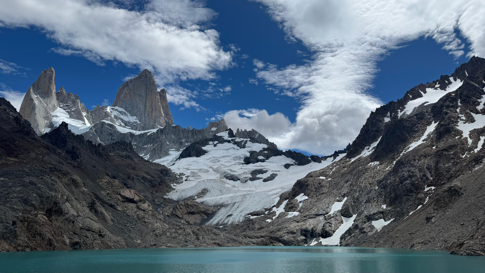
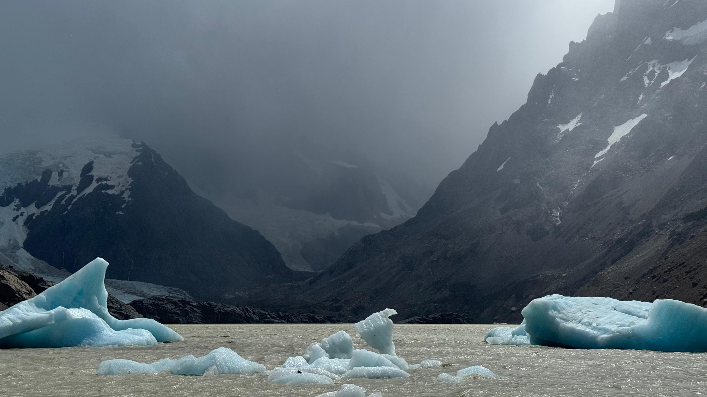
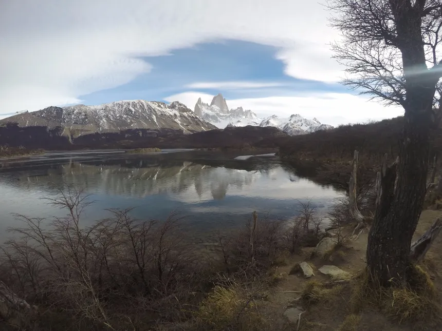

El paraiso de los trekkers
Lo que hace al El Chalten unico en el mundo del trekking es que todos sus senderos comienzan directamente desde el pueblo. No necesitás contratar transporte, ni guías, ni pagar acceso. Simplemente ponés las botas y caminás. El Parque Nacional Los Glaciares es gratuito para todos los visitantes.
Laguna de los Tres
Es el trekking mas famoso y exigente del area, con aproximadamente 20 kilometros ida y vuelta y un desnivel acumulado de unos 1000 metros. La ultima hora de caminata es empinada y exige un buen estado fisico, pero la vida desde la laguna, con el Fitz Roy casi encima tuyo, es absolutamente incomparable. La duracion estimada es de 8 a 10 horas.

Laguna Torre
Este sendero conduce a la base del imponente Cerro Torre. Con 18 kilometros ida y vuelta y un desnivel mucho mas suave, es una caminata mas accesible pero igualmente impresionante. La laguna suele tener tempanos de hielo flotando en su superficie, que se desprenden del glaciar Grande. La duracion estimada es de 6 a 8 horas.

Laguna Capri
Para quienes buscan una caminata más corta o están comenzando en el trekking, la Laguna Capri es una opción excelente. Con apenas 7 kilómetros de ida y vuelta y una duración de 3 a 4 horas, ofrece una vista panorámica del Fitz Roy con la laguna en primer plano. Es uno de los paisajes más fotografiados de toda la Patagonia.

Consejos básicos
El clima en El Chaltén puede cambiar de manera radical en cuestión de minutos. Es fundamental llevar siempre ropa de abrigo y lluvia, aunque el día amanezca despejado. También es imprescindible llevar agua suficiente, snacks y protector solar. Por último, todos los visitantes deben registrarse en el Centro de Informes del Parque Nacional antes de salir a caminar: es gratuito y obligatorio.